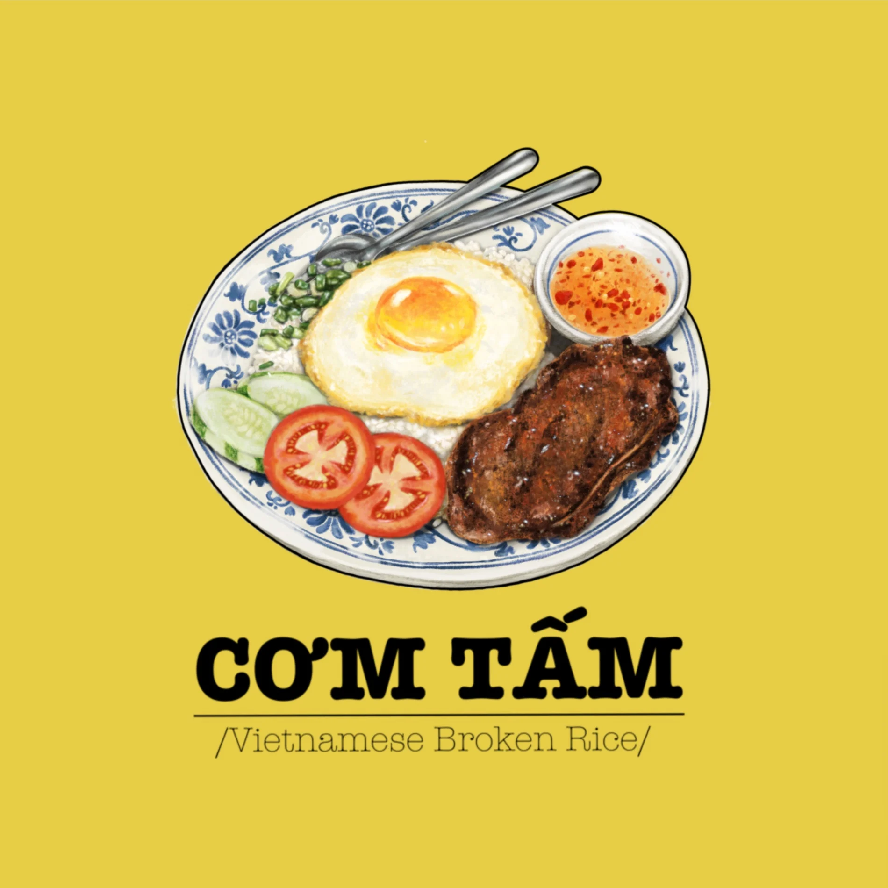

Cơm Tấm Tàu Hủ Ky (Broken Rice with Shrimp Paste Wrapped in Bean Curd Skin)

Savory broken rice served with succulent shrimp paste and crispy bean curd skin 🦐
Due to the different size and shape of the grains,
broken rice has a different, softer texture from "unbroken" rice,
and absorbs flavours more easily. Cơm tấm is for everyone. 🍚
Ingredients
- 1 cup broken rice
- 1 lbs shrimp, peeled, deveined
- 4 cloves garlic
- ½ tsp salt, and adjust to taste
- 2 tsp sugar, and adjust to taste
- a dash of Nước Mắm (fish sauce)
- 2 large bean curd skins
Instructions
Gather all the ingredients. Spread it out and let it cool completely.
To make the Cơm Tấm
- Rinse the broken rice grains with cool water 2-3 times or until the water is mostly clear.
- Place rice in rice cooker and fill it with water using the finger trick.
- Cook the broken rice. When finished, set aside.